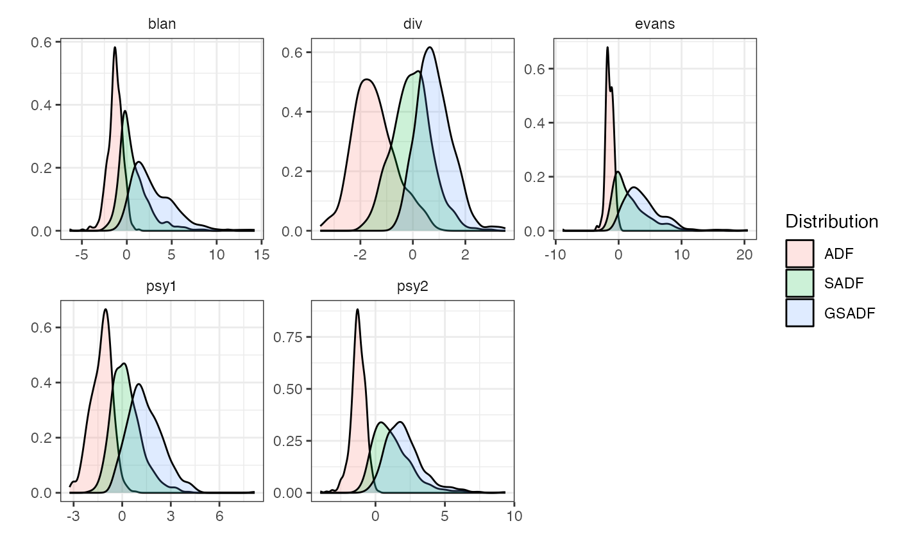

radf_wb_cv performs the Harvey et al. (2016) wild bootstrap re-sampling
scheme, which is asymptotically robust to non-stationary volatility, to
generate critical values for the recursive unit root tests. radf_wb_dist
computes the distribution.
radf_wb_cv(data, minw = NULL, nboot = 500L, dist_rad = FALSE, seed = NULL) radf_wb_distr(data, minw = NULL, nboot = 500L, dist_rad = FALSE, seed = NULL)
| data | A univariate or multivariate numeric time series object, or a numeric vector or matrix, or a data.frame. The object should not have any NA values. |
|---|---|
| minw | A positive integer. The minimum window size (default = \((0.01 + 1.8/\sqrt(T))T\), where T denotes the sample size). |
| nboot | A positive integer. Number of bootstraps (default = 500L). |
| dist_rad | Logical. If |
| seed | An object specifying if and how the random number generator(rng)
should be initialized. Either NULL or an integer will be used in a call to
|
For radf_wb_cv a list that contains the critical values for ADF,
BADF, BSADF and GSADF t-statistics. For radf_wb_dist a list that
contains the ADF, SADF and GSADF distributions.
This approach involves applying a wild bootstrap re-sampling scheme to construct the bootstrap analogue of the Phillips et al. (2015) test which is asymptotically robust to non-stationary volatility.
Harvey, D. I., Leybourne, S. J., Sollis, R., & Taylor, A. M. R. (2016). Tests for explosive financial bubbles in the presence of non-stationary volatility. Journal of Empirical Finance, 38(Part B), 548-574.
Phillips, P. C. B., Shi, S., & Yu, J. (2015). Testing for Multiple Bubbles: Historical Episodes of Exuberance and Collapse in the S&P 500. International Economic Review, 56(4), 1043-1078.
radf_mc_cv for Monte Carlo critical values and
radf_sb_cv for Sieve Bootstrapped critical values
# \donttest{ # Default minimum window wb <- radf_wb_cv(sim_data)#> 1/5 2/5 3/5 4/5 5/5tidy(wb)#> # A tibble: 15 x 5 #> id sig adf sadf gsadf #> <fct> <fct> <dbl> <dbl> <dbl> #> 1 psy1 90 -0.588 1.55 2.89 #> 2 psy2 90 -0.588 3.01 4.25 #> 3 evans 90 -0.578 5.03 7.40 #> 4 div 90 -0.257 0.908 1.70 #> 5 blan 90 -0.265 3.07 6.27 #> 6 psy1 95 -0.483 2.02 3.47 #> 7 psy2 95 -0.460 3.66 5.00 #> 8 evans 95 -0.355 6.20 9.31 #> 9 div 95 0.148 1.31 1.95 #> 10 blan 95 0.0341 4.61 8.20 #> 11 psy1 99 -0.197 3.33 4.95 #> 12 psy2 99 -0.302 5.04 7.11 #> 13 evans 99 -0.0759 12.5 15.2 #> 14 div 99 0.799 1.82 2.59 #> 15 blan 99 0.532 8.17 14.2# Change the minimum window and the number of bootstraps wb2 <- radf_wb_cv(sim_data, nboot = 600, minw = 20)#> 1/5 2/5 3/5 4/5 5/5tidy(wb2)#> # A tibble: 15 x 5 #> id sig adf sadf gsadf #> <fct> <fct> <dbl> <dbl> <dbl> #> 1 psy1 90 -0.588 1.47 2.76 #> 2 psy2 90 -0.712 2.90 3.84 #> 3 evans 90 -0.512 5.27 7.91 #> 4 div 90 -0.359 0.877 1.67 #> 5 blan 90 -0.313 2.89 6.75 #> 6 psy1 95 -0.408 2.18 3.30 #> 7 psy2 95 -0.553 3.67 4.57 #> 8 evans 95 -0.402 7.52 9.80 #> 9 div 95 -0.0591 1.16 2.03 #> 10 blan 95 -0.0800 4.65 8.20 #> 11 psy1 99 0.101 2.93 4.08 #> 12 psy2 99 -0.261 5.39 6.17 #> 13 evans 99 -0.0119 10.7 14.9 #> 14 div 99 0.485 1.69 2.57 #> 15 blan 99 0.383 7.35 11.9# Simulate distribution wdist <- radf_wb_distr(sim_data)#> 1/5 2/5 3/5 4/5 5/5autoplot(wdist)# }